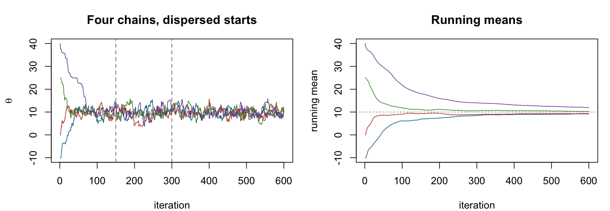
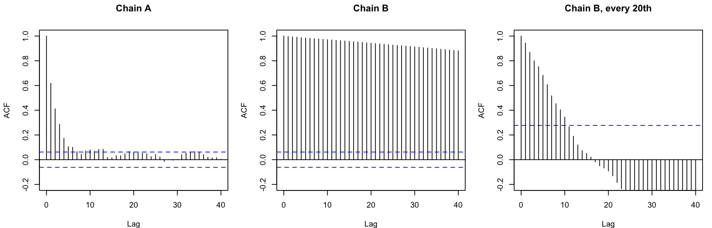
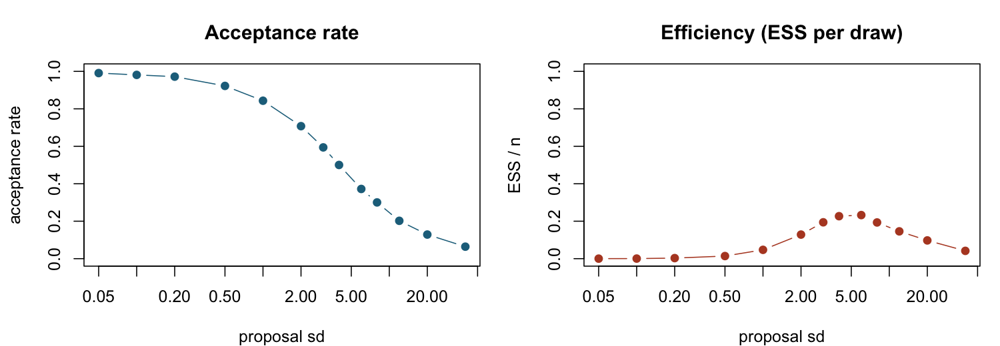
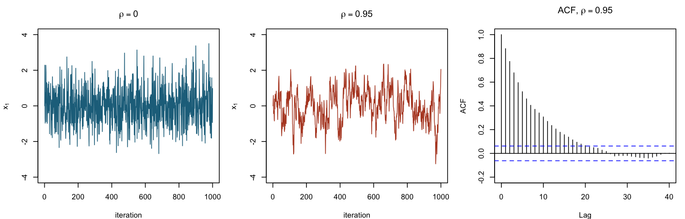

MCMC diagnostics: has it converged, and how many draws is it worth?
The goal: look at a trace plot and an ACF and say, in two or three sentences, where burn-in ends, whether the chain mixes, and what the sample mean is really worth. By hand, compute \(\hat R\), the effective sample size and the Monte Carlo standard error from a few summary numbers. A sampler that has run is not a sampler that has worked, and this lesson is how you tell.
NOTES.md), but the lecturer taught it, so treat it as likely new material. The old papers did ask it, in three shapes: "how would you check convergence of the Gibbs sampler? Give informal and formal checks" (2017), "from this trace plot, how many samples would you discard as burn-in?" and "is the sample mean a fine estimate, and what is its standard error given the autocorrelation?" (2015), and "explain burn-in in a few sentences" (2016). All three are here. About 55 minutes, paper and FX-82. Assumed: Lesson 22 (posterior notation), and the idea of an MH or Gibbs chain from Lesson 24 and Lesson 25. Here I generate my own chains, so you don't need those lessons first.1 · Two questions, and the lecturer's list of tools
MCMC gives a sequence \(\theta^{(1)},\theta^{(2)},\dots\) that is a Markov chain, not an iid sample from \(p(\theta\mid x)\). That causes the two concerns on slide 3:
| Concern | Informal check (look at a plot) | Formal check (compute a number) | Fix |
|---|---|---|---|
| 1. Has the chain converged to the target? | trace plots of several chains from overdispersed starts (slide 5) | BGR / Gelman–Rubin \(\hat R<1.05\) (slide 8) | discard burn-in; run longer; better proposal |
| 2. How much information do the correlated draws hold? | ACF plot; trace looks like a "hairy caterpillar" not a "wooly snake" (extra notes p.4) | effective sample size (ESS), MC standard error (slide 14) | run longer; retune the step size; thin (mostly for memory) |
Everything below fits that table. The chain I use in most figures is a random-walk Metropolis sampler for a target \(p(\theta\mid x)=N(10,\,2^2)\) (so the truth is known: posterior mean 10, sd 2), proposal \(\theta'\mid\theta\sim N(\theta,s^2)\), with step size \(s\) varied to produce each behaviour.
2 · Trace plots: four chains, four diagnoses
A trace plot draws \(\theta^{(t)}\) against \(t\). A healthy chain is a "hairy caterpillar": it hovers around a fixed level with a fixed spread, no trend, no long flat stretches. Below are four different runs on the same target (the dotted line is the truth, which in real life you do not have).
![Four trace plots of 1000 iterations each, same y-axis from -2 to 32, dotted line at 10. Chain A: rapid up-and-down fluctuation around 10 between about 4 and 15. Chain B: a smooth slow wander from 10 down to about 6 at iteration 150, then up to about 14 at iteration 850. Chain C: starts at 30, falls steeply to about 10 within roughly 40 iterations, then fluctuates around 10 between about 4 and 15. Chain D: piecewise flat stretches, many lasting 20 to 50 iterations, jumping between values from 6 to 15 with long plateaus.](../assets/img/l26-four-traces.png)
Do first (about 3 minutes)
For each of A–D write one line: has it converged? does it mix? what would you change? Then open the answer.
Diagnoses
- A: good mixing. Stationary level and spread, fast oscillation (hairy caterpillar). Nothing to change.
- B: slow mixing. Values stay near their neighbours for hundreds of iterations (wooly snake): the chain is highly autocorrelated, so 1000 draws carry the information of a handful. It is not stuck at one value, but its mean is unreliable. Cause: steps too small. Fix: larger step size.
- C: not yet converged at the start. A steep drift from the starting value 30, then stationary. The early stretch (here the first 40 or so iterations) is the burn-in: discard it.
- D: stuck. Long flat plateaus: the sampler proposes, and almost always rejects, then occasionally accepts a jump. Cause: steps too large. Fix: smaller step size.
The reveal, in R (I only had the draws, not the settings, when diagnosing; the acceptance rate is computable from the chain itself, since a rejection repeats the previous value):
> sapply(chains, function(x) round(mean(diff(x) != 0), 2)) A B C D 0.53 0.97 0.76 0.05 > sapply(chains, function(x) round(c(first100 = mean(x[1:100]), rest = mean(x[-(1:100)])), 2)) A B C D first100 10.34 8.66 12.33 9.36 rest 10.11 9.87 9.92 10.01
diff(x) != 0 is TRUE where the chain moved, so the mean is the fraction of proposals accepted: the acceptance rate. The settings were step sizes \(s=4\) (A), \(0.15\) (B), \(1.5\) (C, start 30), \(40\) (D). The second table shows what burn-in does: chain C's first 100 draws average 12.33, pulled up by the start at 30, while the rest average 9.92.
Warning on flat plateaus vs slow drifts. B has acceptance 0.97 yet bad mixing, and D has acceptance 0.05 and bad mixing. A high acceptance rate does not mean a good sampler; the two failure directions look different in the trace (smooth wander vs plateaus) and have opposite fixes.
1. A trace plot shows long flat stretches, with the chain jumping to a new level now and then. Which is the most likely cause for a random-walk Metropolis sampler?
2. Chain C starts at 30 and reaches the stationary band (4 to 15) after about 40 iterations. Which burn-in is the best choice?
3 · Burn-in and several chains from overdispersed starts
Burn-in is discarding the first iterations of each chain, to diminish the effect of the initial values (slide 6). The chain is only approximately stationary at the start: it began from a value chosen by you, not from the posterior, so early draws are biased toward the start. Burn-in is not a fixed number; it depends on the start and the sampler.
One chain can look fine and be wrong (it may be sitting in one mode). The lecture's remedy: run several chains from overdispersed starts, i.e. more spread out than the target posterior, and see whether they come together and then behave alike (slide 5). If they do, discard the burn-in and pool them.

Reading it: the traces overlap after about iteration 100, so a burn-in of about 100 (the dashed line at 150 is the safe choice I use below). The running (cumulative) means on the right are the tute's "cumulative average" plot (week 11, Q2): they settle slowly because the early draws stay in the average for ever. This is why you discard burn-in instead of hoping averaging fixes it.
Burn-in in two sentences (2016 pattern). The chain starts at an arbitrary value, so its first draws are not from the posterior. We discard those early iterations so the estimates are not biased by the start, and keep draws once the chain looks stationary.
4 · The BGR diagnostic \(\hat R\), by hand
The lecture's version (slides 7–8): run \(M\) chains, each of length \(L+T\); look at the last \(T\) iterations of each. Then
- \(B\) = standard deviation of the pooled sample of all \(MT\) draws ("between-chain variability" in the slide's loose wording);
- \(W\) = average of the \(M\) within-chain standard deviations;
- \(\hat R=B/W\). If \(\hat R<1.05\), accept the last \(T\) observations of each chain as stationary and pool them. \(\hat R\gg1\) is clear evidence of non-convergence, and \(\hat R\to1\) as \(T\to\infty\).
The slide says "the actual estimator makes a number of modifications to account for degrees of freedom"; the version above is what you compute on paper. The idea: if the chains have not found a common region, the pooled spread is inflated by their different centres, while each chain alone is narrow. Overlapping chains give \(B\approx W\).
Worked example: Figure 2's four chains
Standard deviation of each chain over iterations 1–150, then over 151–600 (apply(chs[w, ], 2, sd), \(M=4\)):
> Rhat <- function(m) sd(as.vector(m)) / mean(apply(m, 2, sd)) > round(apply(chs[1:150, ], 2, sd), 2) [1] 5.51 2.38 3.85 9.32 > round(apply(chs[151:600, ], 2, sd), 2) [1] 1.96 2.13 2.09 1.96 > round(c(sd(chs[1:150, ]), sd(chs[151:600, ])), 3) [1] 7.180 2.055 > round(c(Rhat(chs[1:150, ]), Rhat(chs[151:600, ])), 2) [1] 1.36 1.01
Check both by hand from the printed numbers. Iterations 1–150 (includes the burn-in):
$$\begin{aligned} W&=\frac{5.51+2.38+3.85+9.32}{4}\\ &=\frac{21.06}{4}=5.265\\ B&=7.18\\ \hat R&=\frac{B}{W}=\frac{7.18}{5.265}=1.36 \end{aligned}$$Iterations 151–600:
$$\begin{aligned} W&=\frac{1.96+2.13+2.09+1.96}{4}\\ &=\frac{8.14}{4}=2.035\\ B&=2.06\\ \hat R&=\frac{2.06}{2.035}=1.01 \end{aligned}$$\(1.36\ge1.05\): not converged on 1–150. \(1.01<1.05\): the last 450 iterations of each chain look stationary, so burn-in of 150 is enough and I pool \(4\times450=1800\) draws. (Running it on all 600 iterations gives \(\hat R=1.12\), which also fails: you must not include the burn-in.)
What \(\hat R<1.05\) does not tell you (slide 9). It only compares the chains you ran. If every start is in the same region and an important region of the target is hard to reach, all chains can agree and still be wrong. Hence "choose overdispersed initial values". It also says nothing about autocorrelation: chain B above could easily have \(\hat R\approx1\) with a hopeless ESS. If it fails: run longer, or use a more efficient proposal.
3. Three chains, last \(T\) draws of each. Within-chain standard deviations: 2.4, 2.6, 2.2. Standard deviation of the pooled sample: 3.10. Compute \(\hat R\) (2 d.p.).
4. Four chains from very different starting values give \(\hat R=1.02\) on the last 500 iterations. Which conclusion is justified?
5 · Autocorrelation, thinning, effective sample size
MCMC draws are positively correlated: an MH step is often close to, or equal to, the current value (extra notes p.1). 4000 correlated draws carry less information than 4000 independent ones (slide 11).
The lag-\(k\) autocorrelation \(\rho_k\) is the correlation between \(\theta^{(t)}\) and \(\theta^{(t+k)}\) (it doesn't depend on \(t\) once the chain is stationary; slide 12). The ACF plot draws \(\hat\rho_k\) against \(k\); the dashed blue lines are the approximate band expected for independent draws, so bars above them are real dependence (the lecturer's coal-mining code comment: "search for the bars that are above the CI of the ACF").

Effective sample size
The effective sample size is the number of independent draws that would carry the same information about the posterior mean as your correlated sample (slide 14). Derivation, from the extra notes (p.5): for a stationary chain with variance \(\sigma^2\) and autocorrelations \(\rho_i\),
$$\text{Var}\Big(\frac1n\sum_{t=1}^n\theta^{(t)}\Big)\approx\frac{\sigma^2}{n}\Big(1+2\sum_{i=1}^\infty\rho_i\Big)\quad\Rightarrow\quad \text{ESS}=\frac{n}{1+2\sum_{i=1}^\infty\rho_i}.$$For iid draws all \(\rho_i=0\) and ESS \(=n\). The crude estimate takes \(\rho_i\approx\rho_1^{\,i}\) (a geometric sequence); the sum is geometric:
$$\begin{aligned} 1+2\sum_{i=1}^\infty\rho_1^{\,i}&=1+\frac{2\rho_1}{1-\rho_1}\\ &=\frac{(1-\rho_1)+2\rho_1}{1-\rho_1}\\ &=\frac{1+\rho_1}{1-\rho_1} \end{aligned}$$ $$\boxed{\ \text{ESS}\approx n\,\frac{1-\hat\rho_1}{1+\hat\rho_1}\ }\qquad\text{(slide 14; the tute's formula)}$$The slide's goal is ESS \(>4000\) for the quantities you report.
Monte Carlo standard error
The posterior mean estimate \(\bar\theta=\frac1n\sum_t\theta^{(t)}\) is a sample mean, but its standard error is not \(s/\sqrt n\) (that needs independence; extra notes p.1: it "will generally underestimate" for positively correlated draws). Replace \(n\) by the ESS:
$$\text{SE}(\bar\theta)\approx\frac{s}{\sqrt{\text{ESS}}},\qquad s=\text{sample sd of the chain}.$$Worked example: chains A and B from Figure 1
> ess <- function(x) { n <- length(x); r <- acf(x, plot = FALSE)$acf[2]
+ c(n = n, rho1 = r, ESS = n*(1-r)/(1+r), se.naive = sd(x)/sqrt(n), se = sd(x)/sqrt(n*(1-r)/(1+r))) }
> round(sapply(chains[c("A", "B")], ess), 3)
A B
n 1000.000 1000.000
rho1 0.618 0.997
ESS 235.876 1.628
se.naive 0.064 0.066
se 0.131 1.641
Check chain A by hand with \(n=1000\), \(\hat\rho_1=0.618\), \(s=2.014\):
$$\begin{aligned} \text{ESS}&=1000\times\frac{1-0.618}{1+0.618}\\ &=1000\times\frac{0.382}{1.618}=236.09\\ \text{SE}_{\text{naive}}&=\frac{2.014}{\sqrt{1000}}=0.064\\ \text{SE}&=\frac{2.014}{\sqrt{236.09}}=\frac{2.014}{15.37}=0.131 \end{aligned}$$(R prints 235.88 because \(\hat\rho_1\) is not rounded: 0.6182.) Chain A: 1000 draws are worth about 236 independent ones, and the naive SE 0.06 is half the honest 0.13. Chain B: 1000 draws are worth about two, and the honest SE is 1.64 against the naive 0.07: it is 25 times larger. The naive standard error is off by \(\sqrt{(1+\hat\rho_1)/(1-\hat\rho_1)}\), which is \(\approx2.1\) for \(\rho_1=0.62\) and \(\approx26\) for \(\rho_1=0.997\).
2015 pattern. "Is the sample mean a fine point estimate, what is its SE?" Yes, the mean of the post-burn-in draws is a consistent estimate of the posterior mean even when correlated (once stationary), but \(s/\sqrt n\) is too small; report \(s/\sqrt{\text{ESS}}\).
By hand with summary numbers only
A chain of \(n=2000\) post-burn-in draws has sample sd \(s=3.0\) and \(\hat\rho_1=0.80\).
$$\begin{aligned} \text{ESS}&=2000\times\frac{1-0.80}{1+0.80}\\ &=2000\times\frac{0.20}{1.80}=222.22\\ \text{SE}_{\text{naive}}&=\frac{3.0}{\sqrt{2000}}=0.07\\ \text{SE}&=\frac{3.0}{\sqrt{222.22}}=0.20 \end{aligned}$$To reach ESS \(=4000\) at this \(\hat\rho_1\), you would need \(n=4000\times\frac{1.80}{0.20}=36000\) draws.
Blocking (batch means), from the extra notes
Another way to get an honest SE without \(\rho_1\) (extra notes p.2–4; WinBUGS's "MC error"): split the \(n\) draws into \(Q\) blocks of size \(a=\lfloor\sqrt n\rfloor\), take block means \(\bar h_{(i)}\); if \(a\) is large enough these are close to independent, so
$$S^2=\frac1{Q-1}\sum_{i=1}^Q\big(\bar h_{(i)}-\bar h\big)^2,\qquad\text{MC error}=\frac{S}{\sqrt Q}.$$Example: \(n=100\), so \(a=10\), \(Q=10\), block means \(4.8,5.4,5.1,4.5,5.7,5.2,4.9,5.5,4.6,5.3\):
$$\begin{aligned} \bar h&=\frac{51.0}{10}=5.10\\ \sum(\bar h_{(i)}-\bar h)^2&=0.09+0.09+0+0.36+0.36+0.01+0.04+0.16+0.25+0.04=1.40\\ S^2&=\frac{1.40}{9}=0.1556,\qquad S=0.39\\ \text{MC error}&=\frac{0.39}{\sqrt{10}}=0.12 \end{aligned}$$Rule of thumb (p.4): the MC error should be at most 5% of the posterior sd you are estimating. Since \(\text{SE}=s/\sqrt{\text{ESS}}\), that means ESS \(\ge(1/0.05)^2=400\).
Thinning
Thinning keeps every \(k\)th draw (slide 13). Advantages: simple, less memory. Disadvantage: it throws information away. See it in numbers: chain A thinned by 3 (the lecturer's coal-mining example also uses by = thin):
> A3 <- chains$A[seq(1, 1000, by = 3)] # thin by 3
> round(ess(A3), 3)
n rho1 ESS se.naive se
334.000 0.326 169.733 0.109 0.153
Autocorrelation drops (0.62 to 0.33), but ESS falls from 236 to 170 and the honest SE rises from 0.131 to 0.153. Thinning never adds information; do it only if storage matters, and keep the full run if you can. Chain B thinned by 20 (Figure 3, right) still has \(\hat\rho_1=0.94\): thinning cannot rescue a sampler with the wrong step size.
5. A chain has \(n=1000\) post-burn-in draws and lag-1 autocorrelation \(\hat\rho_1=0.60\). What is the effective sample size (nearest whole number)?
6. Same chain, sample sd \(s=5\). Give the Monte Carlo standard error of the sample mean, allowing for autocorrelation (2 d.p.).
7. You thin a stationary MCMC chain by keeping every 5th draw. Which statement is correct?
8. (What does this R line compute?) x <- chain[-(1:200)]; acf(x, plot = FALSE)$acf[2] where chain is a vector of MCMC draws.
chain[-(1:200)] removes the first 200 draws (burn-in). acf(..., plot = FALSE)$acf is the vector \(\hat\rho_0,\hat\rho_1,\dots\), so index [2] is \(\hat\rho_1\) (index 1 is lag 0, which is always 1). ESS needs one more step: \(n(1-\rho_1)/(1+\rho_1)\).6 · Step size, acceptance rate, and Gibbs
For a random-walk MH chain, the proposal standard deviation \(s\) trades two failures (week 11 tute Q2 asks you to compare \(s=0.1\), \(2.5\), \(10\)). On the same \(N(10,2^2)\) target, 5000 iterations each, burn-in 500 dropped:
| step \(s\) | acceptance rate | \(\hat\rho_1\) | ESS \(=n\frac{1-\hat\rho_1}{1+\hat\rho_1}\), \(n=4500\) | what the trace looks like |
|---|---|---|---|---|
| 0.1 | 0.99 | 0.997 | 7 | smooth wooly snake |
| 0.5 | 0.92 | 0.971 | 66 | wander |
| 2 | 0.71 | 0.747 | 652 | caterpillar, a bit slow |
| 4 | 0.50 | 0.648 | 960 | caterpillar |
| 10 | 0.25 | 0.687 | 834 | caterpillar with some flat bits |
| 40 | 0.07 | 0.910 | 213 | long plateaus |

- Step too small: nearly every proposal is accepted (acceptance close to 1) but each move is tiny, so \(\hat\rho_1\to1\), ESS is tiny, and the trace is a wooly snake. Burn-in is also slow from a far-off start.
- Step too large: most proposals land far out in the tails and are rejected, the chain repeats values (plateaus), \(\hat\rho_1\to1\) again.
- In between: ESS is highest. Here an acceptance rate somewhere in 0.25–0.5 works well; that range is a common rule of thumb, not from the slides, so don't quote a specific "optimal" number.
So the tute's "what happens at \(s=0.1\) and \(s=10\)" has a standard answer: acceptance rate high/low, cumulative averages move slowly/jump around, ESS small in both cases.
Gibbs has no acceptance rate to tune
A Gibbs update draws exactly from a full conditional, so every draw is accepted: acceptance rate \(\equiv1\) and says nothing about quality. Gibbs mixes badly when the parameters are strongly dependent in the posterior. Tute week 11, Q1: a Gibbs sampler for a bivariate Normal, \(\Sigma\) with correlation 0.7 vs 0. Here is the extreme, a standard bivariate Normal with correlation \(\rho\) (conditionals \(x_1\mid x_2\sim N(\rho x_2,\,1-\rho^2)\)):

> round(c(rho0 = acf(G0[, 1], plot = FALSE)$acf[2], rho95 = acf(G9[, 1], plot = FALSE)$acf[2]), 3) rho0 rho95 0.069 0.882 > n * (1 - 0.882) / (1 + 0.882) # n = 1000 [1] 62.7
Both sampler runs "worked", but the correlated target makes 1000 draws worth about 63. The fix is a different scheme (e.g. sample \((x_1,x_2)\) jointly, or reparametrise), not a tuning knob.
9. A Gibbs sampler for a bivariate Normal with correlation 0.95 gives \(\hat\rho_1=0.88\) for \(x_1\). A colleague says "check the acceptance rate". Which is correct?
10. A random-walk MH sampler has acceptance rate 0.97, a smooth wandering trace, and \(\hat\rho_1=0.99\). What should you change?
7 · A real run: the coal-mining Gibbs sampler
The lecturer's coal-mining example (extra notes) runs the change-point Gibbs sampler for \((\lambda_1,\lambda_2,M)\) with two chains from different starts, \((1,1,100)\) and \((3,3,50)\), 500 iterations each (code exactly as in the notes; the draws are my own seed).
![Three trace plots over 500 iterations with two chains each in different colours. Top, lambda1: one chain starts at 1 and rises to about 3 within about 8 iterations, the other starts at 3; both then fluctuate between about 2.4 and 3.9. Middle, lambda2: one chain starts at 3 and drops to about 1 on the second iteration; both fluctuate between about 0.6 and 1.3. Bottom, M: one chain starts at 100 and falls to about 40 within 5 iterations, the other starts at 50; both then fluctuate between about 33 and 48.](../assets/img/l26-coal-traces.png)
> head(G1, 6) # chain 1, starting from (la1, la2, M) = (1, 1, 100) [,1] [,2] [,3] [1,] 1.00 1.00 100 [2,] 1.59 0.49 92 [3,] 2.10 0.39 92 [4,] 2.00 0.60 47 [5,] 2.78 1.07 39 [6,] 3.12 1.22 40 > s <- G1[-(1:50), ] # drop 50 as burn-in > round(colMeans(s), 2) [1] 3.12 0.93 39.83 > round(apply(s, 2, function(x) acf(x, plot = FALSE)$acf[2]), 3) [1] 0.084 0.031 0.066
Reading it. Both chains reach the same band within about 10 iterations (the first rows above show chain 1 climbing from 1 to 3.12 for \(\lambda_1\), and \(M\) falling from 100 to about 40). A burn-in of 50, as in the notes, is generous. After burn-in the traces are caterpillars and \(\hat\rho_1\) is under 0.1 for all three, so this Gibbs sampler mixes well:
$$\text{ESS}_{\lambda_1}=450\times\frac{1-0.084}{1+0.084}=450\times\frac{0.916}{1.084}=380.26$$(R, unrounded \(\hat\rho_1\): 380.6.) About 380 effective draws out of 450, so the SE of \(\bar\lambda_1\) is only \(\sqrt{450/380}=1.09\) times the naive one. \(\hat R\) for \(\lambda_1\) from the two chains after burn-in: pooled sd 0.29, \(W=0.29\), \(\hat R=1.00\). Note that the lecturer's thinning example (thin <- 3) barely changes the means (the lecturer's output: 3.15 vs 3.14 for \(\lambda_1\)): with \(\hat\rho_1\) this small, thinning has nothing to fix.
8 · Exam-style question
Setup (8 marks, about 18 minutes, FX-82, 2 d.p.).
Model: a random-walk Metropolis sampler targets the posterior of a Poisson rate \(\lambda>0\), known up to a constant: \(p(\lambda\mid y)\propto\lambda^{19}e^{-4\lambda}\). Proposal: \(\lambda'\mid\lambda\sim N(\lambda,\,0.5^2)\), with negative proposals rejected. Two chains, c1 and c2, of 600 iterations, started at \(\lambda^{(0)}=0.5\) and \(12\). The trace plots and the ACF of chain 1 over iterations 201–600 are below, with R output.
![Left: trace plots of two chains over 600 iterations. Chain 1 (blue) starts at 0.5 and rises to about 5 by iteration 30; chain 2 (red) starts at 12 and falls to about 5 by iteration 70. After about iteration 100 both wander between about 2.5 and 9, with slow excursions lasting 50 to 100 iterations, for example chain 2 rising to about 11 near iteration 370. Right: ACF of chain 1 over iterations 201 to 600, bars falling smoothly from 1 at lag 0 to about 0.91 at lag 1, 0.5 at lag 7, and entering the dashed band at about lag 14.](../assets/img/l26-exam-traces.png)
> round(c(mean(diff(c1) != 0), mean(diff(c2) != 0)), 2) [1] 0.89 0.84 > m <- chs[1:100, ]; round(apply(m, 2, sd), 2); round(c(W = mean(apply(m, 2, sd)), pooled = sd(as.vector(m))), 2) c1 c2 1.12 2.52 W pooled 1.82 2.20 > m <- chs[201:600, ]; round(apply(m, 2, sd), 2); round(c(W = mean(apply(m, 2, sd)), pooled = sd(as.vector(m))), 2) c1 c2 1.02 1.66 W pooled 1.34 1.38 > x <- c1[201:600]; round(c(n = length(x), mean = mean(x), sd = sd(x), rho1 = acf(x, plot = FALSE)$acf[2]), 2) n mean sd rho1 400.00 5.62 1.02 0.91
- From the trace plot, how many initial iterations would you discard as burn-in? Give the evidence. [2]
- The BGR diagnostic is \(\hat R=B/W\), with \(B\) the sd of the pooled sample and \(W\) the average within-chain sd. Compute \(\hat R\) for iterations 1–100 and for iterations 201–600. Using the threshold 1.05, what do you conclude? [2]
- The analyst uses the mean of chain 1 over iterations 201–600 as the point estimate of the posterior mean. Is this reasonable? Give its standard error allowing for autocorrelation, and say how it compares with the naive \(s/\sqrt n\). [2]
- (i) The acceptance rates are 0.89 and 0.84. Is the step size 0.5 too small, about right or too large, and what change would you make? (ii) Name one informal and one formal check of convergence. [2]
Marking-key solution
(a) [1 mark: a sensible value. 1 mark: evidence from the trace.] Chain 1 (start 0.5) reaches the band around 5 by about iteration 30 and chain 2 (start 12) by about iteration 60–70; after about iteration 100 the two chains overlap and wander around the same level with no trend. Discard about the first 100 iterations of each chain (any value in 70–150 with this reasoning earns the marks; discarding to 200 is conservative and fine).
(b) [1 mark: \(B/W\) values. 1 mark: conclusion.]
$$\begin{aligned} \text{Iterations 1–100:}\quad\hat R&=\frac{B}{W}=\frac{2.20}{1.82}=1.21\\ \text{Iterations 201–600:}\quad\hat R&=\frac{1.38}{1.34}=1.03 \end{aligned}$$\(1.21>1.05\): the first 100 iterations are not stationary (the chains are still at different places). \(1.03<1.05\): over 201–600 the chains look stationary and can be pooled.
(c) [1 mark: ESS. 1 mark: SE and comparison.] Yes: after burn-in the chain is (approximately) stationary, so the sample mean is a reasonable estimate of the posterior mean, \(\bar\lambda=5.62\), but the draws are correlated (\(\hat\rho_1=0.91\)), so \(s/\sqrt n\) is too small.
$$\begin{aligned} \text{ESS}&=n\,\frac{1-\hat\rho_1}{1+\hat\rho_1}=400\times\frac{0.09}{1.91}=18.85\\ \text{SE}&=\frac{s}{\sqrt{\text{ESS}}}=\frac{1.02}{\sqrt{18.85}}=\frac{1.02}{4.34}=0.23\\ \text{SE}_{\text{naive}}&=\frac{1.02}{\sqrt{400}}=0.05 \end{aligned}$$The honest SE (0.23) is about 4.6 times the naive one (0.05); 400 draws are worth about 19 independent ones, so the run is too short for a precise estimate.
(d) [1 mark: (i). 1 mark: (ii).] (i) Acceptance 0.89 and 0.84 are very high, and the ACF falls slowly (\(\hat\rho_1=0.91\)): steps are too small; increase the proposal sd (and rerun). (ii) Informal: trace plots of several chains from overdispersed starts, which should overlap and look like stationary noise (and the ACF/trace for correlation). Formal: the Gelman–Rubin/BGR statistic \(\hat R<1.05\) on the post-burn-in draws.
9 · Writing it up: informal + formal (2017 pattern)
Explain (3–5 sentences)
"How would you check for convergence of a Gibbs sampler? Provide both informal and formal checks." Write your answer, then compare.
Model answer
Run several chains from widely separated (overdispersed) starting values. Informally, draw trace plots of each parameter: if the chains converge, they overlap after an initial transient and look like stationary noise around one level with no trend or long flat stretches; discard the early iterations as burn-in. Formally, compute the BGR (Gelman–Rubin) statistic \(\hat R\) = pooled sd \(/\) average within-chain sd on the post-burn-in draws; \(\hat R<1.05\) supports convergence, \(\hat R\gg1\) does not. Passing does not prove convergence, since the chains might all miss a region, which is why the starts must be overdispersed. If it fails, run longer or change the sampler. Separately, check the ACF and ESS to see whether the draws carry enough information (ESS > 4000 in the lecture).
10 · Retrieval from earlier lessons
11. (Retrieval: MH, Lesson 24.) A random-walk MH chain targets a density with kernel \(\pi(\theta)\propto e^{-\theta^2/2}\) and is at \(\theta=3\). It proposes \(\theta'=3.5\) from a symmetric proposal. Give the acceptance probability (2 d.p.).
12. (Retrieval: Monte Carlo, Lesson 23.) For 400 independent draws with sample sd 2, what is the Monte Carlo standard error of the sample mean (2 d.p.)? Then say what changes if the draws came from a Markov chain with \(\hat\rho_1=0.9\).
11 · Score yourself
| If you missed… | Go back to |
|---|---|
| Q1, Q2 | §2–3: plateaus = steps too large; burn-in = where the trace enters the stationary band |
| Q3, Q4 | §4: \(\hat R=B/W\) with \(B\) the pooled sd; threshold 1.05; what a pass does not mean |
| Q5, Q6, Q8 | §5: ESS \(=n(1-\rho_1)/(1+\rho_1)\); SE \(=s/\sqrt{\text{ESS}}\); acf(...)$acf[2] |
| Q7 | §5: thinning loses information |
| Q9, Q10 | §6: step size vs acceptance; Gibbs has no acceptance rate |
| Q11, Q12 | Lessons 24 and 23 |
Retrieval: write these from memory, then check
(1) Why burn-in; how to choose it from a trace plot. (2) Why several chains with overdispersed starts. (3) \(\hat R=B/W\), \(B\) = pooled sd, \(W\) = mean within-chain sd, threshold 1.05. (4) ESS \(=n(1-\rho_1)/(1+\rho_1)\), and where the \(1+2\sum\rho_i\) comes from. (5) SE \(=s/\sqrt{\text{ESS}}\), not \(s/\sqrt n\). (6) Step too small: acceptance near 1, wandering trace. Step too large: low acceptance, plateaus. (7) Thinning: memory only. (8) Gibbs: acceptance rate is 1.
12 · Homework
- Tute week 11, Q1 and Q2 (d)–(f) (
tutes/2026_MAST30027_week11_questions.qmd): Gibbs and MH on the bivariate Normal, trace plots of two chains, cumulative averages, lag-1 autocorrelation and ESS \(n(1-\rho)/(1+\rho)\), \(s=0.1\), \(2.5\), \(10\), and correlation 0.7 (\(\Sigma_{12}=2.8\)). You only need to read and interpret the R output and describe the effect of each change in words, not write the code; run the qmd if you want the plots. - Hand calculation. Three chains, last 500 draws, within-chain sds 0.9, 1.1, 1.0, pooled sd 1.4. Compute \(\hat R\) and conclude. Then one chain has \(\hat\rho_1=0.75\), \(s=1.0\), \(n=500\): give ESS and SE (2 d.p.). How many draws would reach ESS \(=4000\)?
- Coal-mining. From Figure 6, roughly how many iterations does each of \(\lambda_1\), \(\lambda_2\), \(M\) need to reach its band, and why is one burn-in applied to all three?
- Explain in 3 sentences why a chain with acceptance rate 0.99 can still be a bad sampler.
Homework answers
2. \(W=(0.9+1.1+1.0)/3=1.0\), \(\hat R=1.4/1.0=1.40\) (above 1.05: not converged; the chains are in different places). ESS \(=500\times\frac{0.25}{1.75}=71.43\); SE \(=1.0/\sqrt{71.43}=0.12\) (naive 0.04). For ESS 4000: \(n=4000\times\frac{1.75}{0.25}=28000\).
3. About 8 iterations for \(\lambda_1\) (chain from 1 climbs to about 3), 1 to 2 for \(\lambda_2\) (from 3 down to about 1), about 5 for \(M\) (from 100 down to about 40). All three are updated in the same sweep and depend on each other, so you discard the same first iterations from every parameter, taking the slowest.
4. A high acceptance rate means most proposals are accepted, but if the steps are tiny each accepted move barely changes the state: successive draws are almost identical, \(\hat\rho_1\approx1\), ESS \(\ll n\). The acceptance rate says nothing about how far the chain moves; use the ACF/ESS.
Primary source: the lecturer's MCMC diagnostics, slides 5–14 (traces, burn-in, BGR, autocorrelation, thinning, ESS), then Diagnostics_additional for the ESS derivation and block means, and the coal-mining trace-plot notes for a full worked run.